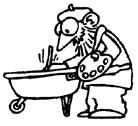

Country Lore
Irene Kubica sprays water on plants after the first spring frost to protect them; Joe Plaugh coats the bottom of his wheelbarrow with leftover enamel; Helen Levchuk keeps bugs out of her home by filling a coffee-bean bag with tomato plant cuttings and pennyroyal; Harold Newcomb dissuaded rabbits from chewing on their hutches by giving them untreated soft pine; Scott Garner, Bob Bailey and Larry Brown share chainsaw tips; Elizabeth Elliott saves herb seeds in nylon stockings; Ernst Erbe soaks rusted-together nuts and bolts in cola overnight.
Mother Earth News readers
September/October 1985
Folks, Facts & Folklore
Frost First Aid
"Don't give up if an early frost catches your vegetable garden or flowers," Irene Kubica, of Norwood, Missouri, advises. "Get up before dawn and gently sprinkle water over every plant. If you can get the frost off in time, and keep it off until the temperature rises to above freezing, you may be able to save them."
Fuss-Free Fat
"I have a helpful hint for families that butcher their own meat," writes Neva Mathes from Pella, Iowa. "It's very important, when rendering hog fat, not to scorch it, so I simply put the fat in my electric slow cooker and set the dial on low. I can then go about my work without worrying about stirring the fat. The end result is a lovely, snow-white lard that I cool, strain, and place in my freezer in plastic containers."
Waste Not . . .
Joe Plaugh wrote to us from Columbia, South Carolina, to say that whenever he has a little enamel paint left over in the bottom of a bucket, he uses it to coat the inside of his wheelbarrow to keep it from rusting.
Block That Rabbit Habit
Harold Newcomb's rabbits liked their wooden hutches so much they were literally chewing their way out of house and home. Harold finally just threw in the towel . . . actually, the Esparto, California, resident threw in a small piece of untreated soft pine. The bunnies were content to chew on that and leave their home alone!
An Unwelcome Mat
Canadian reader Helen Levchuk was tired of bugs invading her St. Catharines, Ontario, home, so last year she invented an unwelcome mat. Helen took a large hemp coffee-bean bag and filled it with tomato plant cuttings and pennyroyal. She set it down in front of the door to her home, and when family and friends wiped their feet on the mat, the insectrepelling fragrance of the plants was released. "If you have cats," Helen suggests, "stick in some catnip to encourage them to lounge on the mat and get rid of their fleas."
A Stocking Seed Saver
Want to collect flower or herb seeds from your choice blooms? Elizabeth Elliott just slips an old nylon stocking over each bloom and ties it shut around the stalk. This way, the flowers in her Anniston, Alabama, garden can dry out naturally and then drop their precious seeds right into the stockings.
Pop Chemistry
Ernst Erbe-an El Paso, Texas, reader-reminds us that cola can substitute for penetrating oil when you've got a rusted nut and bolt or such. Just soak the parts in the soda overnight, and the next day they'll come apart as if you'd used the real thing.
Some Sawyer Suggestions
Chain saw season is upon us, and MOTHER's readers have come through with a stack of useful tips. Scott Garner, of Tonasket, Washington, had problems with sawdust getting in his oil and gasoline filler holes, so now he keeps a small paintbrush conveniently tied to his gasoline can and just sweeps away any dust before refilling.
Morgan Hill, California, resident Bob Bailey wrote to say he solved the mess of trying to funnel oil into his chain saw (and all his other power tools) by making easy to-carry-and-pour oil containers out of those clear plastic squeeze bottles that syrup comes in. Bob assures us that he hasn't yet gotten mixed up and smothered his hotcakes with chain oil!
Larry Brown, of Sparkman, Arkansas, mixes his gasoline and oil in a gallon can and then pours that mixture into onequart oil containers (he uses the new plastic kind). Larry even took an old scarf-the long, narrow kind-and made quart-bottle-size pockets at each end. This way, he can tote his containers to the woodlot and then hang them on a tree limb, where they'll be handy when his saw needs a refill.
Through the years we've all probably discovered a few practical, down-home, time-tested solutions to the frustrating little problems of everyday life. Why not share your best "horse sense" with the rest of MOTHER's readers? Send your suggestions to Country Lore, THE Mother Earth News, 105 Stoney Mountain Rd, Hendersonville, NC 28791. A one year subscription-or a one year extension of an existing subscription-will be sent to each contributor whose tip is printed in this column.-MOTHER.
|
|
 |
|
|
|
|
 |
|
|
|
|